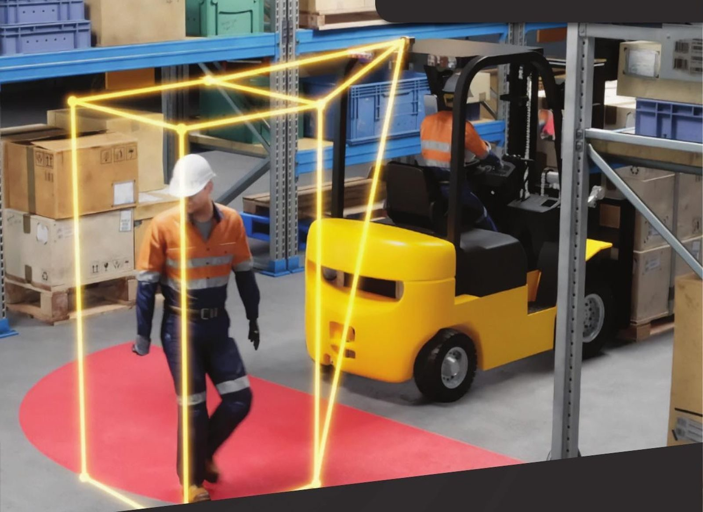
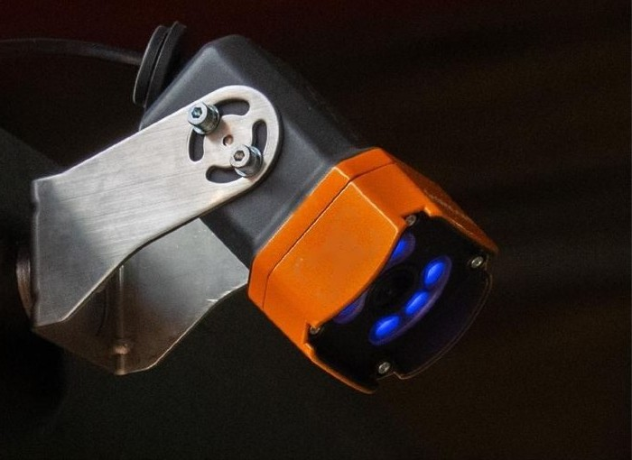
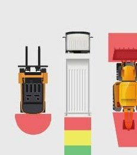
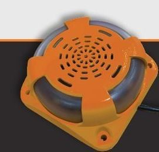
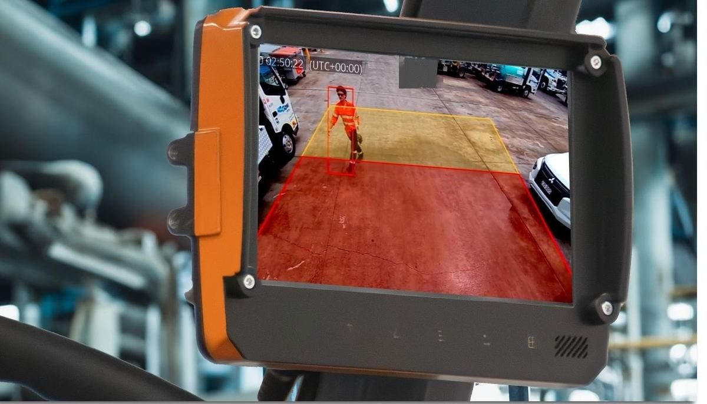
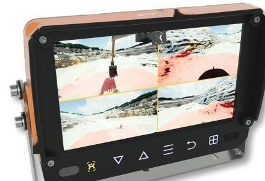
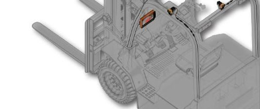
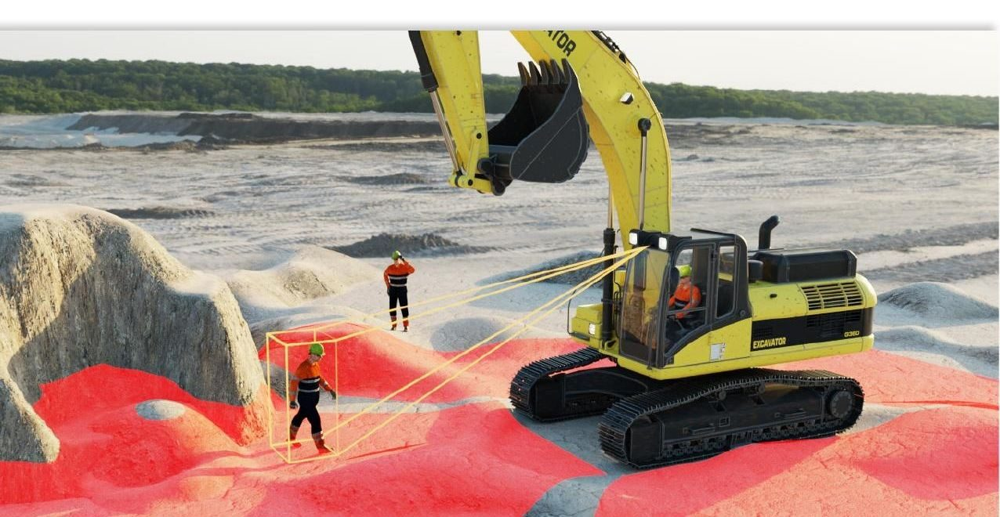

Prevent avoidable collisions
Cameras watch the ground around the machine and alert the operator the moment a person enters a defined zone.

AI cameras that detect people around forklifts, excavators and loaders, then warn the operator in time to stop.
Four things a proximity system has to earn its place by doing.
Cameras watch the ground around the machine and alert the operator the moment a person enters a defined zone.
An engineering control that lowers human and machine interaction, and produces zone breach data you can act on.
Satisfies regulatory requirements and site safety policy with pedestrian detection that stands up to an audit.
Real time warnings turn incidents into near misses, which cuts workflow disruption and incident related downtime.
Each camera works out what it is seeing on the spot. Nothing extra to wire into the machine, and nothing extra to fail.

Zones take the shape the machine and the task call for, not a fixed radius. Detection can also be muted through the park brake or a lockout, so crews can approach safely when the work requires it.

Semi circles, rectangles, trapezoids or free form outlines, set per machine and per direction.

Only the camera facing the way the machine is moving raises an alert. The opposite camera stays muted, so the cab stays quiet.

A 7 inch display in single, split, triple or quad view, dimming automatically as the light drops.
Vision Log records what happened on the machine. PerimeterHub turns a year of those events into something a safety meeting can use.

PerimeterAI is developed in Australia rather than rebadged from an overseas catalogue, so fixes and features are shaped by the sites actually running it.
Detection runs at the edge, inside the camera. No data plan and no cloud subscription are needed to keep the safety system working.
Alongside east coast coverage, technicians and stock are now based in WA, which means faster call outs for Pilbara, Goldfields and Perth metro sites.
Camera, in cab display, Vision Log and the PerimeterHub portal all come from us, built to meet Australian compliance without a third party integrator in the middle.

Hardware and settings are cloned across machines, so the tenth install is the same job as the first.

Engineered in Australia, running on sites across 14 countries. Tell us what you are running and we will tell you what would fit.
Machine types, site conditions and fleet size. Enough for us to say what would actually fit. No obligation and no sales sequence.